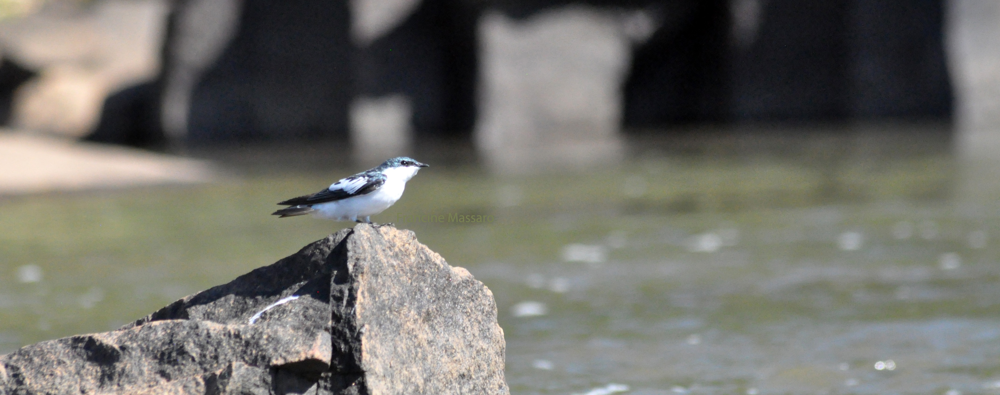
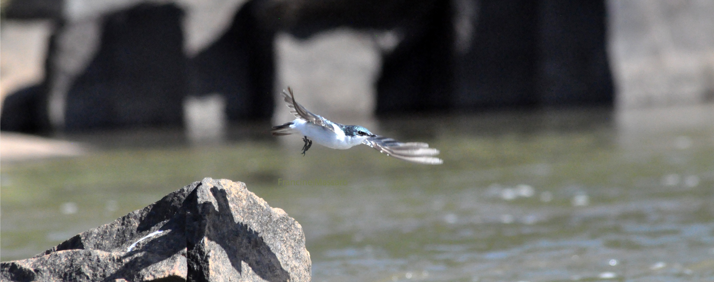
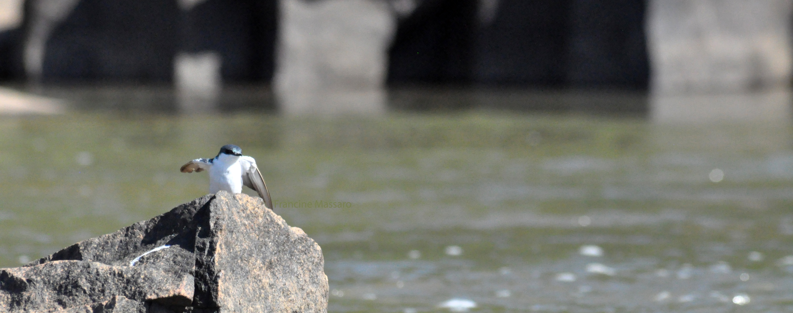

Desde criança sempre fui apaixonada por natureza, e quando uma amiga me deu uma câmera, comecei a registrar algumas especies. Resolvi criar essa página para mostrar alguns dos clics que eu mais gosto.

Foto realizada em Santa Rosa de Viterbo - SP

Foto realizada próximo a cachoeira Mario Ribeiro em Santa Rosa de Viterbo - SP

Foto realizada em Santa Rosa de Viterbo - SP
Registro feito na barragem Itaipava em Santa Rosa de Viterbo - SP.

Registro de um tucanaçu e duas andorinhas feito próximo a barragem Itaipava em Santa Rosa de Viterbo
Registro realizado na casa dos meus pais em Santa Rosa de Viterbo - SP

Registro feito na USP Ribeirão Preto - SP em 15/10/18

Registro feito em sítio Cheiro de Mato em São Francisco Xavier - SP

Registro feito em sítio Cheiro de Mato em São Francisco Xavier - SP
Como não é possível falar em amor a natureza sem defendê-la, fica o vídeo ao lado. Ninguém quer mudar, afinal estacionar é comodo, mas se quisermos continuar vendo animais e continuar fazendo parte desse mundo, temos também que aprender a respeitar os outros seres. A própria pandemia está relacionada com consumo de animais e é apenas questão de tempo até desencadearmos outra, talvez alguma muito pior. Os insetos estão sumindo. A Amazônia está virando pasto e plantação de soja, sendo que 79% da soja do mundo vai para ração de animais que serão assassinados posteriormente. Enquanto isso, pessoas morrem de fome. Está na hora de reavaliarmos o consumo, está na hora de assumir responsabilidade. Tudo de ruim do mundo e essa nova extinção em massa, tem a ver com nossa escolha diária, sendo assim, mova-se! Questione!